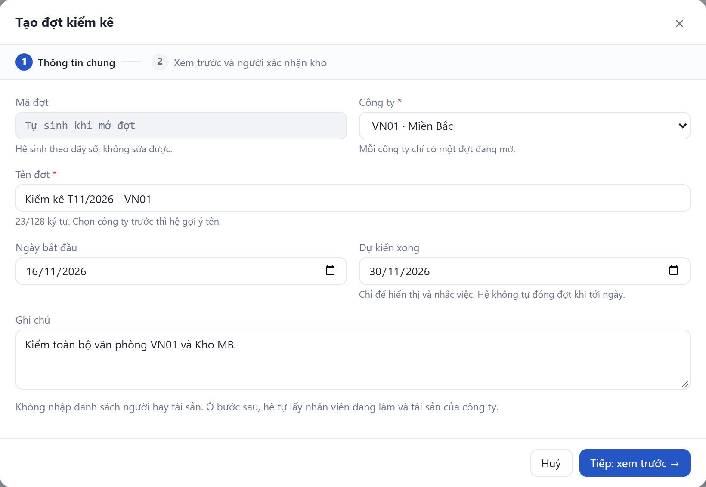
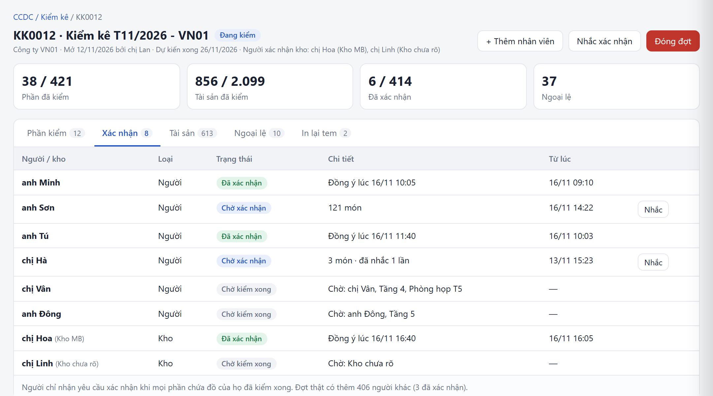

Quản lý tài sản · Kiểm kê CCDC trên V5
Kiểm theo nơi đặt,
xác nhận theo
người giữ
Cách kiểm kê mới: biết chắc ai chưa được kiểm, món nào chưa được kiểm, và ai chịu trách nhiệm.
Tháng 11/2026
Bài toán
Sau mỗi đợt kiểm kê, phải trả lời được ba câu
Ai chưa được kiểm?
Kể cả nhân viên mới chưa có tài sản trên hệ, và người tưởng không giữ gì.
Món nào chưa được kiểm?
Và món nào kiểm rồi nhưng không thấy, hỏng, hoặc đang ở chỗ khác.
Ai chịu trách nhiệm?
Người giữ đã đồng ý với kết quả chưa. Nếu sau này thiếu đồ thì hỏi ai.
Đã chốt với anh Đạt (16/11): kiểm kê chỉ ghi nhận và báo cáo. Không sinh phiếu điều chuyển, không tự sửa người giữ, vị trí hay tình trạng trên bảng tài sản. Hành chính muốn sửa thì tự lập phiếu.
V4 hôm nay
V4 có hai cách kiểm, và không ai xác nhận
phiên, trung bình 14 món mỗi phiên. Danh sách là đồ đang ghi tên người đó.
số dòng kiểm kê. 509 phiên, trung bình 390 món: hành chính quen đi từng phòng mà quét.
trên 1.530 phiếu bị huỷ, 5 năm liền (2021–2025). Quy trình cũ lộn xộn nên bỏ.
Số đo trên dữ liệu online fl_asset (dump 14/11/2026). Code V4 chỉ đọc, không sửa.
V4 sai ở đâu
Sáu lỗi gốc trong cách V4 kiểm kê
Một món ở hai danh sách
Giao từ kho cho người mà vẫn mang mã kho: kho ghi "Không thấy", người ghi "Có".
Danh sách đổi theo ngày
Nạp lúc mở từng phiên, nên không biết tổng phải kiểm là bao nhiêu.
Sót nhân viên mới
Chỉ lấy người đang có đồ trên hệ. Người mới cầm laptop chưa gán thì không ai đến.
Kiểm vùng không ghi ai giữ
Món "không thấy" ở tầng 3 không biết là trách nhiệm của ai.
Lưu là ghi đè cả phiên
Bảng log gấp 6,7 lần dữ liệu thật. Hai máy cùng kiểm thì xoá kết quả của nhau.
Không ai xác nhận
Người giữ không biết mình bị ghi gì. Kho không có người chịu trách nhiệm.
Ý tưởng chính
Tách kiểm kê thành hai việc mà V4 đang gộp làm một
Kiểm theo nơi đặt
Lúc mở đợt, mọi tài sản được chia vào các phần kiểm. Hành chính chọn phần nào thì kiểm phần đó.
Xác nhận theo người giữ
Khi mọi phần có đồ của mình đã kiểm xong, người giữ xác nhận một lần cho toàn bộ đồ mình đứng tên.
Sơ đồ quy trình
Một đợt kiểm kê đi qua những bước nào
Mobile và web đều đọc bản chụp tạo ở bước 2, không đọc lại bảng tài sản. Mỗi lần quét được lưu ngay một món.
Bước 2 · Mở đợt
Lúc mở đợt, hệ chụp danh sách và chia phần
| Tài sản trên hệ | Vào phần |
|---|---|
| Đang ở kho | Kho theo mã kho |
| Có người giữ, có vùng (tầng, phòng) | Vùng đó |
| Có người giữ, không có vùng | Người giữ |
| Ghi ở người đã nghỉ | Nhóm riêng trong báo cáo |
Mọi nhân viên đang làm của công ty, lấy từ nhân sự. Kể cả người có 0 món, nên nhân viên mới không bị sót.
Tổng phải kiểm cố định, nên "còn bao nhiêu chưa kiểm" luôn có đáp án. Có phiếu điều chuyển giữa đợt cũng không làm món biến mất hay bị kiểm hai lần.
Một đợt = một công ty. Lấy dữ liệu từ những gì V5 đã có: API nhân sự, bảng tài sản, danh mục vùng (cờ kho). Khoảng 400 người và 2.000 món: vài giây, một lần.
Bước 3 · Mobile
Hành chính chọn phần, thấy danh sách, quét tem
TSHN25-0101Có
TSHN24-0877 · 📷Hỏng
đang ghi ở Kho MBThêm
- Chọn đợt, chọn phầnKhông chọn "theo nhân viên" hay "theo vùng" nữa: danh sách phần đã chia sẵn, tab Người, Vùng, Kho. Đứng trước ai thì bấm người đó.
- Quét tem từng mónMón trong danh sách tự đánh dấu Có. Hỏng thì bắt chụp ảnh.
- Quét món của phần khácHệ báo món đó thuộc ai, thêm vào và lưu vết ở cả hai phần. Mã lạ không thêm được.
- Tem hỏng thì bấm tayChụp ảnh, hệ đánh dấu cần in lại tem.
- Xong phầnMón còn lại đánh "Không thấy". Mỗi lần quét lưu ngay, mất mạng không mất kết quả.
Bước 5 · Người giữ
Người giữ xác nhận một lần cho mọi đồ mình đứng tên
thấy ở Phòng họp T5Chỗ khác
Khi mọi phần có đồ của mình đã kiểm xong. Ví dụ anh Sơn chờ cả phần của anh Sơn và phần Tầng 3.
Kết quả bị khoá. Hành chính không mở lại được phần đó nữa.
Bắt buộc ghi lý do, có thể tích món chưa đúng. Phần chứa món đó mở lại, hành chính kiểm lại, rồi người giữ xác nhận lần hai.
Không ai giữ, nên người được chọn lúc mở đợt xác nhận thay.
Ví dụ
Một đợt kiểm kê từ đầu đến cuối
Mở đợt VN01
Hệ tạo phần cho mọi nhân viên đang làm. Anh Tú mới vào, trên hệ không giữ gì, vẫn có phần.
Kiểm anh Minh
Laptop Có. Màn hình Hỏng (ảnh). Chuột đang ghi ở Kho MB: thêm vào, kho tự nhận cảnh báo.
Kiểm Tầng 3
115 Có, 3 Không thấy. 2 ghế thấy ở phòng họp T5: Có, ở chỗ khác, không bị tính là mất.
Kiểm anh Tú và Kho MB
Anh Tú đưa laptop lấy từ kho. Kho MB: 2 món đã thấy ở người, 297 Có, 1 Không thấy.
Xác nhận
Anh Minh, anh Tú, chị Hoa (kho) đồng ý. Anh Sơn không đồng ý, Tầng 3 được kiểm lại, rồi anh Sơn đồng ý.
Báo cáo và đóng đợt
Ngoại lệ: màn hình hỏng, laptop của anh Tú chưa có phiếu… Hành chính tự lập phiếu sau đợt.
Tên người và số liệu là giả định. Bấm thử đúng kịch bản này ở màn minh hoạ web; hình các màn ở ba slide tiếp theo.
Web · Quản lý
Tạo đợt: hai bước, xem trước rồi mới mở


Bước 1 chỉ nhập tên, công ty, ngày, ghi chú. Bước 2 hệ tính trước số phần và cảnh báo nhưng chưa lưu gì; chọn người xác nhận kho rồi mới bấm Mở đợt.
Web · Quản lý
Chi tiết đợt: nhìn là biết còn thiếu gì

Người, phòng, kho nào chưa kiểm hoặc đang kiểm. Bấm một dòng để xem từng món.
Ai chưa xác nhận, ai không đồng ý. Có nút nhắc.
Tài sản, ngoại lệ, in lại tem. Thêm nhân viên, mở lại phần, đóng đợt.
Web · Người giữ và quản lý
Người giữ phản hồi, quản lý thấy ngay


Trái: anh Sơn tích món chưa đúng và ghi lý do. Phải: tab Xác nhận phía quản lý, từng người đang ở bước nào. Mở menu NV xác nhận kiểm kê.
So sánh
Khác V4 ở đâu
| Tình huống | V4 | Cách mới |
|---|---|---|
| Nhân viên mới, trên hệ chưa giữ gì | Không ai kiểm | Có phần riêng, đồ đang cầm được phát hiện |
| Món giao từ kho nhưng vẫn mang mã kho | Kho ghi "Không thấy" | Nằm ở phần người giữ; kho thấy "đã thấy ở phần anh Tú" |
| Đồ để sai phòng | "Không thấy" | "Có, ở chỗ khác", biết đang ở đâu |
| Đồ chung ở các tầng | Không ghi ai giữ, không ai xác nhận | Kiểm theo vùng, người đứng tên xác nhận |
| Hai người cùng kiểm một phần | Lần lưu sau xoá lần trước | Mỗi món lưu riêng |
| Đợt đã xong chưa | Phải tự dò nhiều bản ghi | Báo cáo 1 và 2 trả lời thẳng |
Đánh giá
Được gì, và phải trả giá gì
Được
- Trả lời chắc ba câu: ai chưa kiểm, món nào chưa kiểm, ai chịu trách nhiệm
- Giữ thói quen đi theo phòng của hành chính
- Không sót người, không có kết quả mâu thuẫn
- Không ghi đè, không nhiều bản
- An toàn: không đụng bảng tài sản
- Làm bằng những gì V5 đã có: API nhân sự, bảng tài sản, danh mục vùng
Phải trả
- Thêm phần xác nhận, phức tạp hơn "chỉ theo người"
- Người giữ phải chờ mọi phần có đồ của mình xong
- Ban đầu có thể nhiều món "ở chỗ khác" vì nhãn vùng cũ. Đây là phát hiện đúng, gom vào báo cáo ngoại lệ
- API mobile đổi nhiều so với thiết kế v3.1, phải báo bên app sớm
Cần anh Đạt chốt
Năm câu hỏi
| # | Câu hỏi | Đề xuất |
|---|---|---|
| 1 | Ai xác nhận Kho MB và Kho MN? Cố định hay mỗi đợt chọn lại? | Chọn lúc mở đợt, hệ gợi ý người trong tổ hành chính của miền và người của đợt trước |
| 2 | Nhân viên công ty này cầm tài sản công ty kia thì ai kiểm? | Đợt của công ty nhân viên kiểm luôn, đánh dấu "tài sản công ty khác" |
| 3 | Đồ chung ở các tầng đang đứng tên ai? Người đó có chịu xác nhận cả danh sách? | Nên đứng tên người thật sự phụ trách khu đó |
| 4 | Kho MB thuộc VN01, Kho MN thuộc VN02, đúng không? | Xác nhận nhanh |
| 5 | Ba luật xác nhận: tích món khi không đồng ý; đã xác nhận thì khoá; đóng đợt khi còn người chưa xác nhận thì ghi "chưa xác nhận" | Giữ cả ba |
Hai câu nhỏ, hỏi nhanh: 6 đóng đợt có ghi ngày kiểm cuối lên tài sản không; 7 món "chờ thanh lý, đang dùng" có kiểm không. Ví dụ từng câu: trang phân tích, mục 12.
Đề nghị
- Kiểm kê chỉ ghi nhận và báo cáo (đã chốt 16/11)
- Người giữ bắt buộc xác nhận; không giao trước người kiểm
- Duyệt hướng: kiểm theo nơi đặt, xác nhận theo người giữ
- Chốt 5 câu chính và 2 câu nhỏ, sau đó em làm thiết kế DB và API, gửi bên app, rồi code